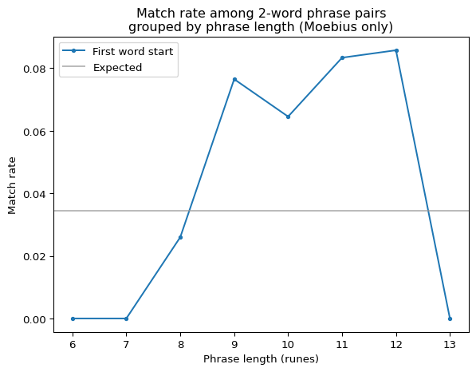
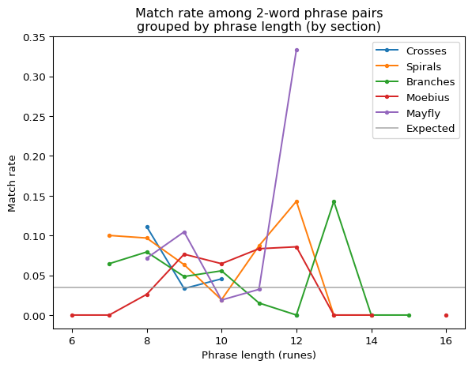
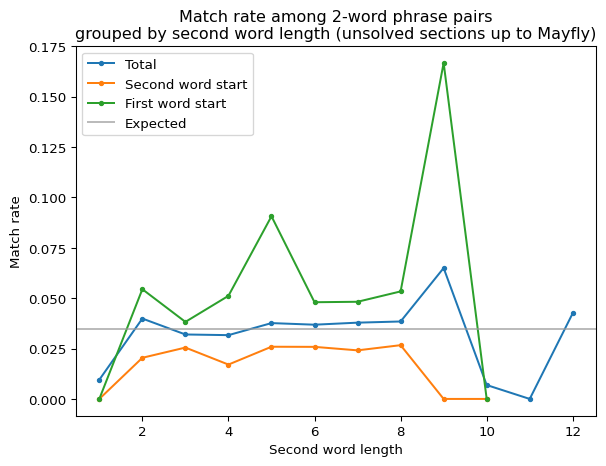
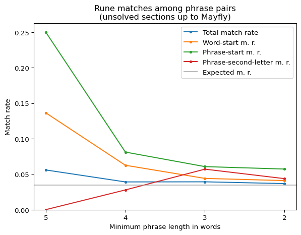
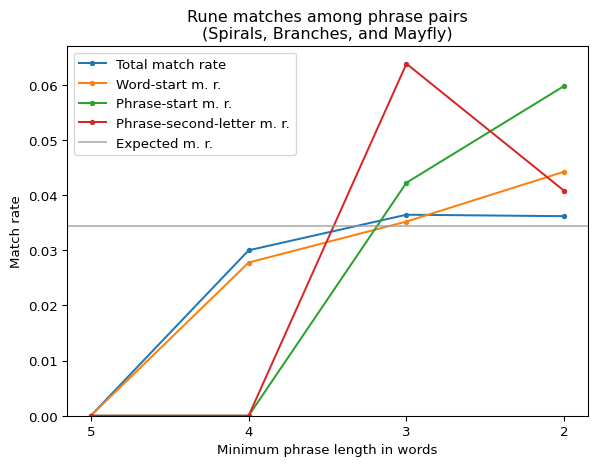
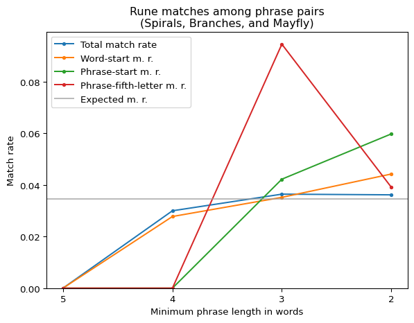
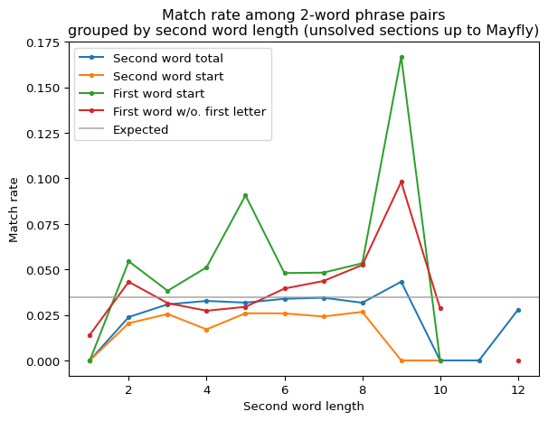
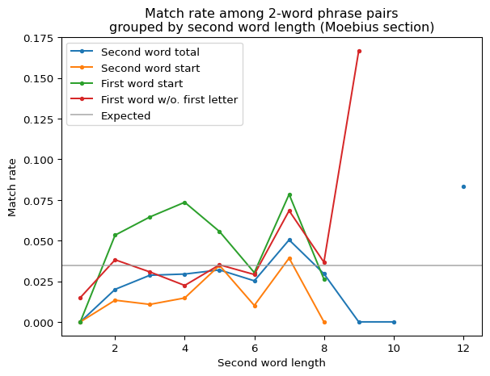

import pandas as pdimport numpy as npimport matplotlib.pyplot as pltimport syssys.path.append('..')from cryptext.cicada import liberprimus as lp, gematriaprimus as gp, futhorcfrom cryptext.analytics import ioc, expected_ioc, diff_text, crosstext_iocfrom helperfunctions import find_phrase_groups, find_phrase_groups_strict, pgroups_to_ppairs, count_rune_matches
This document serves as a collection of possible paths to pursue in further attempts at solving the Liber Primus. Any of the following ideas may be tackled independently of each other, and each may help further push the solving effort in a meaningful way.
More Information On Autokey Component
It has been established that the match rate of the first phrase letter among phrase pairs is higher than other letters. The mechanism we used to explain this is a backwards autokey. It is possible that this assumption is wrong and the match rate is explained by some other mechanism, but even if we assume it is true, it leaves many (including some quite fundamental) questions unanswered.
One of these questions is: while we see the match rate increase only for the first letter of a word, does the autokey also apply to other letters (likely with another layer of encryption on top)? Or is encryption of other letters independent of this autokey component? A similar question could be applied to the first letter itself: would some autokey be enough to obfuscate the ciphertext of even the first letter to this extent, or is some other cipher used on top of it?
Constant or Word-based Offset
Another question is: if the cipher is word-aware, is the autokey also word-aware (e.g. that the dependency is always in the next word, or perhaps even computed from the entire next word), or is it a traditional constant offset autokey, which may reach into the next word, the current one or even the word after the next? This could in theory be tested by plotting match rates by total rune length of a phrase, and comparing the match rates - if the autokey is with a constant offset, then we should expect a sharp jump in the match rate once the phrase length reaches the offset. The Moebius section somewhat appears to conform to this, with the expected offset being about 9 runes:
Code
fig_title ='Match rate among 2-word phrase pairs\ngrouped by phrase length (Moebius only)'pgroups = find_phrase_groups_strict(lp.section_moebius(), 2, 5)plot_x =range(1, 14)plot_y_phrase = []for word_length in plot_x: fp = [p for p in pgroups ifsum(len(w) for w in p[0].words) == word_length] stats = count_rune_matches(fp) p,pm,a,m,wa,wm,fw,fwm = stats.pairs, stats.first_word_nth_rune_matches[0], stats.runes, stats.rune_matches, stats.words, stats.word_begin_matches, stats.first_word_runes, stats.first_word_rune_matches plot_y_phrase.append(pm/p if p >=5elseNone)fig, ax = plt.subplots()ax.plot(plot_x, plot_y_phrase, label='First word start', marker='.')ax.axhline(1/29, color='#999999aa', label='Expected')ax.xaxis.set_label_text('Phrase length (runes)')ax.yaxis.set_label_text('Match rate')ax.set_title(fig_title)ax.legend()plt.show()

However, when looking at the other sections, the results are less conclusive, which might mean that it does not hold for Moebius either (note: I am only including sections with higher-than-expected phrase start match rate, i.e. not wing-tree onward):
Code
fig_title ='Match rate among 2-word phrase pairs\ngrouped by phrase length (by section)'fig, ax = plt.subplots()for section in lp.load_unsolved().sections()[:-3]: pgroups = find_phrase_groups_strict(section, 2) plot_x =range(6, 17) plot_y = []for phrase_rune_length in plot_x: fp = [p for p in pgroups ifsum(len(w) for w in p[0].words) == phrase_rune_length] stats = count_rune_matches(fp) p,pm,a,m,wa,wm = stats.pairs, stats.first_word_nth_rune_matches[0], stats.runes, stats.rune_matches, stats.words, stats.word_begin_matches plot_y.append(pm/p if p >=5elseNone) ax.plot(plot_x, plot_y, label=section.name().replace('Spiral ', 'Sp. '), marker='.')ax.axhline(1/29, color='#999999aa', label='Expected')ax.xaxis.set_label_text('Phrase length (runes)')ax.yaxis.set_label_text('Match rate')ax.set_title(fig_title)ax.legend()plt.show()

Other Ways To Group Phrase Pairs
As a side-note, it is also possible to divide the 2-word phrase pairs by other statistics than phrase length; perhaps we might be able to spot some more patterns. The two main additional groupings are by the length of the first word, or by the second word; both have advantages and disadvantages. Grouping by first word seems less correlated and more noisy overall, but when looked at by individual sections, it reaches greater peaks. Grouping by second word on the other hand produces a mostly flat graph, except for two high points, and there are some notable peaks in other areas than just first word start (although more on that later).
Regardless, I unfortunately was not able to find any consistent order in these groupings that I could explain.
Code
fig_title ='Match rate among 2-word phrase pairs\ngrouped by second word length (unsolved sections up to Mayfly)'pgroups = []for s in lp.load_unsolved().sections()[:-3]: pgroups += find_phrase_groups_strict(s, 2)plot_x =range(1, 14)plot_y_total = []plot_y_word = []plot_y_phrase = []# plot_y_next_matches = []for word_length in plot_x: fp = [p for p in pgroups iflen(p[0].words[1]) == word_length]# fp = pgroups_to_ppairs(fp)# plot_y_next_matches.append(# sum(# len(p[0].word_after) == len(p[1].word_after)# for p in fp# if p[0].word_after is not None and p[1].word_after is not None# ) / (len(fp) or 1)# ) stats = count_rune_matches(fp) p,pm,a,m,wa,wm,fw,fwm = stats.pairs, stats.first_word_nth_rune_matches[0], stats.runes, stats.rune_matches, stats.words, stats.word_begin_matches, stats.first_word_runes, stats.first_word_rune_matches plot_y_total.append(m/a if a >=5elseNone) plot_y_word.append((wm - pm)/(wa - p) if (wa - p) >=5elseNone) plot_y_phrase.append(pm/p if p >=5elseNone)fig, ax = plt.subplots()ax.plot(plot_x, plot_y_total, label='Total', marker='.')ax.plot(plot_x, plot_y_word, label='Second word start', marker='.')ax.plot(plot_x, plot_y_phrase, label='First word start', marker='.')# ax.plot(plot_x, plot_y_next_matches, label='Next word length match fraction', marker='.')ax.axhline(1/29, color='#999999aa', label='Expected')ax.xaxis.set_label_text('Second word length')ax.yaxis.set_label_text('Match rate')ax.set_title(fig_title)ax.legend()plt.show()

The rest of the groupings (along with other experiments related to the autokey component) was moved to the Fruitless Experiments document to save space.
Encryption Of The Remaining Letters
So far I have only talked about first letters of words or phrases, but the remaining letters are just as important, and if the autokey component dependency for first letters of words is not directed at the next word’s first letter (which it most likely isn’t), then knowing the remaining letters is neccessary to even work with the first letters. So what can be inferred from the ciphertext?
Second Phrase Letter Match Rate
If we plot the match rate of the second letter in the first phrase’s word alongside other statistics, we find out that the match rate is higher than the total match rate (although admittedly not that much). On first impression, that looks good, because it shows at least some predictability:
Code
fig_title ='Rune matches among phrase pairs\n(unsolved sections up to Mayfly)'X = [5,4,3,2]Yall, Yword, Yphrase, Ysecond = [], [], [], []for min_phrase_length in X: pgroups = []for s in lp.load_unsolved().sections()[:-3]: pgroups += find_phrase_groups(s, min_phrase_length) stats = count_rune_matches(pgroups) p,pm,a,m,wa,wm = stats.pairs, stats.first_word_nth_rune_matches[0], stats.runes, stats.rune_matches, stats.words, stats.word_begin_matches sa, sm = stats.first_word_of_length_above[1], stats.first_word_nth_rune_matches[1] Yall.append(m / a if a >0elseNone) Yword.append(wm / wa if wa >0elseNone) Yphrase.append(pm / p if p >0elseNone) Ysecond.append(sm / sa if sa >0elseNone)fig, ax = plt.subplots()ax.plot(X, Yall, label='Total match rate', marker='.')ax.plot(X, Yword, label='Word-start m. r.', marker='.')ax.plot(X, Yphrase, label='Phrase-start m. r.', marker='.')ax.plot(X, Ysecond, label='Phrase-second-letter m. r.', marker='.')ax.axhline(1/29, color='#999999aa', label='Expected m. r.')ax.set_ylim(bottom=0)plt.gca().invert_xaxis()ax.set_xticks(X)ax.xaxis.set_label_text('Minimum phrase length in words')ax.yaxis.set_label_text('Match rate')ax.legend()ax.set_title(fig_title)plt.show()

When looked at more closely, by section, it looks like different sections once again show different behavior, with Spirals, Branches, and Mayfly in particular showing a spike in the second phrase letter match rate in 3-word phrases, while Moebius and Crosses behaving more evenly.
Code
fig_title ='Rune matches among phrase pairs\n(Spirals, Branches, and Mayfly)'# Discovered: 2025-06-22X = [5,4,3,2]Yall, Yword, Yphrase, Ysecond = [], [], [], []for min_phrase_length in X: pgroups = []for s in [ lp.section_spirals(), lp.section_branches(), lp.section_mayfly() ]: pgroups += find_phrase_groups_strict(s, min_phrase_length) stats = count_rune_matches(pgroups) p,pm,a,m,wa,wm = stats.pairs, stats.first_word_nth_rune_matches[0], stats.runes, stats.rune_matches, stats.words, stats.word_begin_matches sa, sm = stats.first_word_of_length_above[1], stats.first_word_nth_rune_matches[1] Yall.append(m / a if a >0elseNone) Yword.append(wm / wa if wa >0elseNone) Yphrase.append(pm / p if p >0elseNone) Ysecond.append(sm / sa if sa >0elseNone)fig, ax = plt.subplots()ax.plot(X, Yall, label='Total match rate', marker='.')ax.plot(X, Yword, label='Word-start m. r.', marker='.')ax.plot(X, Yphrase, label='Phrase-start m. r.', marker='.')ax.plot(X, Ysecond, label='Phrase-second-letter m. r.', marker='.')ax.axhline(1/29, color='#999999aa', label='Expected m. r.')ax.set_ylim(bottom=0)plt.gca().invert_xaxis()ax.set_xticks(X)ax.xaxis.set_label_text('Minimum phrase length in words')ax.yaxis.set_label_text('Match rate')ax.legend()ax.set_title(fig_title)plt.show()

You can try to search for other letters than just the second, and it turns out, the 5th letter has an even more increased match rate than the first in Spirals, Branches, and Mayfly at 3-word phrases. At this point, this feels like a major clue (now only to know what it’s saying).
Code
fig_title ='Rune matches among phrase pairs\n(Spirals, Branches, and Mayfly)'# Discovered: 2025-06-22X = [5,4,3,2]Yall, Yword, Yphrase, Ysecond = [], [], [], []for min_phrase_length in X: pgroups = []for s in [ lp.section_spirals(), lp.section_branches(), lp.section_mayfly() ]: pgroups += find_phrase_groups_strict(s, min_phrase_length) stats = count_rune_matches(pgroups) p,pm,a,m,wa,wm = stats.pairs, stats.first_word_nth_rune_matches[0], stats.runes, stats.rune_matches, stats.words, stats.word_begin_matches sa, sm = stats.first_word_of_length_above[4], stats.first_word_nth_rune_matches[4] Yall.append(m / a if a >0elseNone) Yword.append(wm / wa if wa >0elseNone) Yphrase.append(pm / p if p >0elseNone) Ysecond.append(sm / sa if sa >0elseNone)print(f'{min_phrase_length} words : {sm} / {sa}')fig, ax = plt.subplots()ax.plot(X, Yall, label='Total match rate', marker='.')ax.plot(X, Yword, label='Word-start m. r.', marker='.')ax.plot(X, Yphrase, label='Phrase-start m. r.', marker='.')ax.plot(X, Ysecond, label='Phrase-fifth-letter m. r.', marker='.')ax.axhline(1/29, color='#999999aa', label='Expected m. r.')ax.set_ylim(bottom=0)plt.gca().invert_xaxis()ax.set_xticks(X)ax.xaxis.set_label_text('Minimum phrase length in words')ax.yaxis.set_label_text('Match rate')ax.legend()ax.set_title(fig_title)plt.show()
5 words : 0 / 1
4 words : 0 / 7
3 words : 7 / 74
2 words : 18 / 460

High Points In 2-Word Phrases
Some special views of the ciphertext (in particular when matching 2-word phrases) show spikes in match rate of the phrase’s first word. Perhaps those could be exploited (e.g. with help of cribs). How to exploit it, though, I am not sure.
Code
fig_title ='Match rate among 2-word phrase pairs\ngrouped by second word length (unsolved sections up to Mayfly)'pgroups = []for s in lp.load_unsolved().sections()[:-3]: pgroups += find_phrase_groups_strict(s, 2)plot_x =range(1, 14)plot_y_word = []plot_y_phrase = []plot_y_fw = []plot_y_sw = []for word_length in plot_x: fp = [p for p in pgroups iflen(p[0].words[1]) == word_length] stats = count_rune_matches(fp) p,pm,a,m,wa,wm,fw,fwm = stats.pairs, stats.first_word_nth_rune_matches[0], stats.runes, stats.rune_matches, stats.words, stats.word_begin_matches, stats.first_word_runes, stats.first_word_rune_matches fwa =sum(stats.first_word_of_length_above[1:]) fwm =sum(stats.first_word_nth_rune_matches[1:]) swa, swm = a - p - fwa, m - pm - fwm plot_y_word.append((wm - pm)/(wa - p) if (wa - p) >=5elseNone) plot_y_phrase.append(pm/p if p >=5elseNone) plot_y_fw.append(fwm/fwa if fwa >=5elseNone) plot_y_sw.append(swm/swa if swa >=5elseNone)fig, ax = plt.subplots()ax.plot(plot_x, plot_y_sw, label='Second word total', marker='.')ax.plot(plot_x, plot_y_word, label='Second word start', marker='.')ax.plot(plot_x, plot_y_phrase, label='First word start', marker='.')ax.plot(plot_x, plot_y_fw, label='First word w/o. first letter', marker='.')ax.axhline(1/29, color='#999999aa', label='Expected')ax.xaxis.set_label_text('Second word length')ax.yaxis.set_label_text('Match rate')ax.set_title(fig_title)ax.legend()plt.show()

Code
fig_title ='Match rate among 2-word phrase pairs\ngrouped by second word length (Moebius section)'pgroups = find_phrase_groups_strict(lp.section_moebius(), 2)plot_x =range(1, 14)plot_y_word = []plot_y_phrase = []plot_y_fw = []plot_y_sw = []for word_length in plot_x: fp = [p for p in pgroups iflen(p[0].words[1]) == word_length] stats = count_rune_matches(fp) p,pm,a,m,wa,wm,fw,fwm = stats.pairs, stats.first_word_nth_rune_matches[0], stats.runes, stats.rune_matches, stats.words, stats.word_begin_matches, stats.first_word_runes, stats.first_word_rune_matches fwa =sum(stats.first_word_of_length_above[1:]) fwm =sum(stats.first_word_nth_rune_matches[1:]) swa, swm = a - p - fwa, m - pm - fwm plot_y_word.append((wm - pm)/(wa - p) if (wa - p) >=5elseNone) plot_y_phrase.append(pm/p if p >=5elseNone) plot_y_fw.append(fwm/fwa if fwa >=5elseNone) plot_y_sw.append(swm/swa if swa >=5elseNone)fig, ax = plt.subplots()ax.plot(plot_x, plot_y_sw, label='Second word total', marker='.')ax.plot(plot_x, plot_y_word, label='Second word start', marker='.')ax.plot(plot_x, plot_y_phrase, label='First word start', marker='.')ax.plot(plot_x, plot_y_fw, label='First word w/o. first letter', marker='.')ax.axhline(1/29, color='#999999aa', label='Expected')ax.xaxis.set_label_text('Second word length')ax.yaxis.set_label_text('Match rate')ax.set_title(fig_title)ax.legend()plt.show()

Possible Mechanisms
So what could be the possible ways the second and later letters of words be encrypted? Unfortunately, the most I can manage at this point are very rough estimates, but let’s lay out a couple of ideas anyway (and then explain why they are probably wrong).
Autokey With Different Offset
The other letters may be dependent on other letters just like the first letter, but the offset is different, potentially (much?) larger. If the autokey is word-based instead of letter-based (with constant offset), then a large distance could easily be calculated (e.g. 2 words after, 3 words, etc., perhaps even words before?) even through various skips due to f interruptors or rune doublets… oh right, low rune doublets. We haven’t even started on those.
This mechanism doesn’t require extra ciphers, and so could be considered “simple”, but it just doesn’t seem compatible with the data from the ciphertext. Phrase pairs aren’t as long as in the solved sections, but they are still up to 7 words, and by then, even with very long offsets, the plaintexts should be stabilized at least for a couple of letters. And if the autokey is word-based, then we might expect an increasing trend of matches with a long phrase pair (i.e. right to left first one letter equals, then two, etc.) but that is not what we see, therefore this method likely isn’t used.
Ciphertext Autokey
What if the letters are dependent on the immediately previous letter, just on its ciphertext? Well, since the match rate of the first letter is high, then we should expect a match in the first letter to be followed by a match in the next letter in 100% of cases. Therefore this is not a likely solution.
I am not sure whether each letter after the first of a word has its own complicated encryption method, but if it does, even just solving the first three or so might be enough for the rest of the word to be guessable. If the difference is only between the first and other letters of words, then a single method should suffice for everything.
Independence From Phrase Pairs
Analyzing the ciphertext using phrase pairs has its advantages, as we can assume that the pairs’ plaintexts match more often than not, but it is also a limited view into the workings of the cipher, since the pairs only represent “random points” in the ciphertext, at which the state of the cipher and content of the plaintext are often hard to guess.
Another disadvantage is that, despite the entirety of ciphertext being large, phrase pairs are not always abundant, which leads to small datasets, which are much more prone to finding nonexistent patterns in.
Finding some order within the entire ciphertext would give solvers advantage when tackling any and all parts of the ciphertext (and flexibility to focus on what they find most promising), but unfortunately, even if some pattern is known to exist in phrase pairs, attempts at finding some equivalent in the entire ciphertext have so far all failed.
General Properties
Due to my relative success with matching phrase pairs, I think that, just like the solved ones, the unsolved sections do not include transposition in their encryption. I think if they did, then the match rate of phrase pairs would not be as good as it is. But then again… transposition would explain some properties even the autokey component hypothesis can’t, so maybe we should not rule it out just yet.
From various patterns in their ciphertexts (peak in phrase start match rate at 2-word phrases, peak in second letter match rate at 3-word phrases, peak in word-before start letter match rate at 3-word phrases), I would guess that Spirals, Branches, and Mayfly sections are likely encrypted with a single cipher, or at least the same kind of cipher.
Moebius seems to behave the most nicely and has good amount of phrase pairs, along with being large, which should give solvers more room to collect data on. Crosses seem similar to Moebius, but due to their relatively low size, it is hard to spot similarities that are consistent.
Spiral Branches retain some nice properties of Moebius (well, mostly just the higher word match rate), but otherwise they feel to me like they will be one of the harder sections to crack. I did not do any special analysis of the final paragraph at 44.jpg-45.jpg, and I don’t think it will be any different, but it is possible.
And finally, I have no idea what Wing-Tree and Cuneiform are, and would probably focus on them the least at this point.
Some Matches?
Here are some cool matches I found. They are pretty much cherry-picked, so don’t be too eager to apply properties from here to the entire unsolved sections.
@ BRANCHES
"ᚩᛁᛈ-ᛁᛄᛁᚩᛖ" <
"ᛚᛝᚢ-ᛉᛄᚠᛟᚢ" << (note the second-word matches as well)
"ᚩᛈᛗ-ᛖᛉᛡᛒᚹ" <
"ᛚᚳᛄ-ᛉᚪᚾᛇᛉ" <<
@ MOEBIUS
"ᛁᛞᛄ ᛖᛗᚱ ᚷᚪᚻᛠᛚᚷᚩ ᛉᚻ ᛡᛝ ᛞᚱᚹᚩᛈᛡ ᚣᚳᚦ"
"ᛁᚫᛟ ᛖᛗᚹ ᛖᛉᚦᛗᚪᛋᛉ ᛞᚦ ᛡᚢ ᛉᛗᚫᛋᚳᛖ ᚳᚫᛠ"
"ᚢᚳᚱᛡ-ᛖᚩᛁᚣᛄᛏᛡ" <
"ᛇᛠᛄᛁ-ᛟᛄᛞᚢᚳᛝᚩ" (interestingly, the ᚢᚳ bigram is also here, though offset... but there is not much reason to think this is anything but coincidence; especially due to different encryption of first and non-first letter in word)
"ᚢᚳᚱᚻ-ᛡᛟᛗᛠᛝᛄᚦ" <
"ᚠᚣᚢᛁᚹ-ᛟᚪᚣᛁᛠᛄᚪ" <
"ᛝᛚᛗᛠᛗ-ᚪᚱᛡᛗᛒᚩᚹ"
"ᚠᛝᚠᚱᚹ-ᛟᛒᛗᚷᛞᚾᛡ" <
"ᚷᛄᛒᛡᛗ-ᛞᛈᚪᚳᛠᚷᛋ"
"ᛝᛏᛖᛒᛚᛉᚻ-ᚱᚩᚫᛇᛈᛄᛠ" <
"ᛋᛄᛚᚪᛄᚱᛏ-ᛞᚷᚫᛠᚠᛉᛞ"
"ᚫᛏᛖᚢᛝᚫᛡ-ᚾᛁᛠᚻᚦᚣᛠ" <
@ MAYFLY
"ᛈᛟᚠ ᛈᚠᛝᚫᛝᛋ ᛟᛄᚹ"
"ᛈᛟᛝ ᛇᚦᚣᛏᚫᛉ ᛖᛟᛏ"
"ᚾᚳᚻᚹ-ᛇᛡᛈᛠᚹ" <
"ᚾᛉᛝᛗ-ᛖᚦᚢᛝᛡ" <
"ᚾᛚᚹᛖ-ᚩᛚᛁᛄᛏ" <
"ᛠᛞᚣᛝ-ᚾᛁᚠᛈᛚ"
"ᛁᛠᚷᛚ-ᚷᚳᛋᚩᛝ"
"ᚾᛞᛝᚻ-ᛈᛠᚻᛡᚢ" <
@ SPIRAL BRANCHES
"ᚦᛞ ᛁᚫᚩᚾ ᛋᚷᛈᚪᛖᚩ ᚣᚦᚹ ᚾᚷ"
"ᚻᛠ ᛞᚩᛄᚷ ᛋᚩᛠᚳᛖᛋ ᚣᛖᚫ ᛈᚦ"
"ᚩᛚᛞ ᛚᚹᚳᛄᚹᛉ ᚪᛡᚹᛇ ᛖᛖᚹ ᛏᚪ"
"ᛖᛋᛞ ᛚᚳᛒᛞᛏᛈ ᛖᚾᛈᚣ ᚱᚠᚻ ᚫᛝ"
"ᛟᚳᛚᛞᛡᛚ ᚩᚳᛝᚢ ᛈᚹᛏ" <
"ᛟᚪᛒᛁᛁᛋ ᛇᚷᚻᛋ ᛇᛡᛒ" <
"ᛟᛟᚳᛏᛄᛞ ᛉᚾᛗᚦ ᛁᛄᚱ" <
"ᛚᚹᚳᛄᚹᛉ ᚪᛡᚹᛇ ᛖᛖᚹ" <<
"ᛚᚳᛒᛞᛏᛈ ᛖᚾᛈᚣ ᚱᚠᚻ" <<
"ᚠᛚᛟᛝᚦᛠ ᚦᚣᛖᚣ ᚾᚷᚾ"
"ᛉᛉᛗᚾᚫᛋ ᚱᛗᛞᛋᚳ ᚦᛚᛟ" < (a small match, but also a doublet in the
same place)
"ᚹᚹᛟᚩᛒᚩ ᚾᚩᛄᛟᚾ ᚦᛡᚠ" <
"ᚩᛄᛞᚦᛏᛁ ᛈᚾᚪᚱᛄ ᛉᚱᚣ"
"ᛟᚻᛇᚾᛈᛏ ᛠᚣᛒᚢᚷ ᚷᚪᛇ"